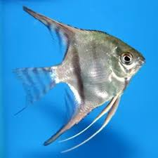

- this angel fish is 2 for £10
- Angelfish are native to a large area of tropical South America, including much of the Amazon River system. In their natural habitat, they are found almost exclusively in quiet, slow moving water. In the wild they prefer dimly lit areas, under overhanging vegetation or among trees that have fallen into the river.
- Angelfish grow to be quite large and will require an aquarium of 55 gallons or larger when full grown
- While angelfish are generally peaceful fish but they can be aggressive toward one another, especially when attempting to pair off and spawn
- this betta fish is one for £20
- Bettas are native to Thailand, Cambodia, Laos, Vietnam, Malaysia and Indonesia. Their natural habitat is often shaded by overhanging trees, shrubs and aquatic vegetation. There are over 70 recognized species of Betta
- Because bettas are not very active, they don’t require a lot of space. However, larger habitats are more stable and easier to maintain
- Male bettas are highly territorial towards each other and must be kept separately or in a partitioned container. They can be kept with other fish in a peaceful community aquarium of 15 gallons or larger
- this axolot is one for £50
- Axolotls are large salamanders that come from the remnants of lakes Xochimilco and Chalco in Mexico City, Mexico. Axolotls live their entire lives in water, never emerging onto land
- A common 10-gallon reptile aquarium can accommodate a single adult axolotl, but due to the large amount of waste produced by these messy creatures, a 20-gallon aquarium is a safer choice
- Most axolotls reach about 10 inches total length (from the tip of the nose to the end of the tail). A few will pass 12 inches, but this is rare.
- these fish are for one fish £60
- Glass fish has a large native range and can be found across most parts of Asia, including Japan, India, Pakistan, Cambodia, Malaysia, Thailand, Myanmar, Nepal, and Bangladesh
- Most catfish, while energetic, will stay on the bottom of the tank, whereas Glass Catfish are exceptions and enjoy swimming around.
- They make great additions to peaceful community tanks and tend to keep to themselves, only ducking for cover when disturbed.
- this is 4 for £30
- African Dwarf Frogs originated in the rivers and streams of central Africa. These fully aquatic amphibians never need to leave the water. African Dwarf Frogs can be kept with community fish. Their colors can range from olive green to brownish green.
- Keep in an appropriately sized aquarium; provide plenty of hiding places and a secure lid to prevent escape. Stable water quality and parameters are critical to the health of aquatic lif
- Can be kept with relatively docile fish that will not attempt to eat them, such as community tetras or loaches

- this koi fish is for one fish £400
- They are very active and free-swimming fish that will show off their vibrant colors at every opportunity
- Your garden pond should maintain temperatures between 74-86°F all year round. In the winter, a heating system will be needed to prevent any freezing.
- Koi need at least 250 gallons of water. A school of large Koi will require up to 1,000 gallons.

- these are sold for £60
- Most Plecostomus species are native to South America, although a few can be found in Panama and Costa Rica. They occupy a wide range of habitats, although a number of species have very limited ranges and are only found in certain parts of specific rivers
- Many suckermouth catfish are nocturnal and spend a good portion of the day hiding in a crevice or under an overhang. However, some will adapt to aquarium life and be more sociable during the day, especially at feeding time. Loricariids are compatible with most aquarium fish
- While not much is known about the spawning behavior of many rarer species, a fair number of suckermouth catfish have been bred in captivity. They typically spawn in caves, with the male caring for the eggs until they hatch
- these are 12 for £20
- You’ll most frequently find guppies in South America, particularly in countries such as Brazil, Barbados, and Guyana Nowadays, guppies show up in pretty much every freshwater body within their reach. You can easily find them in streams situated near coastal fringes in mainland South America.
- Being small fish, guppies don’t need enormous amounts of room. That said, we do still have some fundamental nuggets of wisdom on how many guppies you should keep together in an aquarium.
- Guppies are among the easiest fish to keep, which is a big part of why they’re so popular. They’re hardy and tolerant of different water conditions
- these are 10 for £20
- Platy fish are small peaceful fish. Even though they are not considered shoaling or schooling fish, they are much happier when kept in a small group
- Platy fish are very colorful and peaceful fish. They are hardy and make the perfect addition to most aquariums.
- You can easily spot a pregnant female as the abdomen becomes quite large and if the skin is transparent enough you might also be able to notice a couple of black eyes. Occasionally she will also develop a gravid spot (a black mark on her abdomen

- these are for 1 is £50
- The common seahorse is a wide-ranging Indo-Pacific seahorse that inhabits waters from Indonesia to the Philippines, Pakistan, and India to southern Japan, Hawaii, and the Society Islands. Variations of this species reside in other areas
- Common seahorses range in color from black to orange and yellow. Black individuals often have silvery stripes or other markings on the body
- A 30-gallon aquarium is sufficient for a single pair. Add 10 gallons to the size of the aquarium for each additional pair
- £40
- These are peaceful fish that will only turn aggressive when another Clownfish species is present – this means that a tank can only have one Clownfish species.
- There are at least thirty species of Clownfish but two of them (most frequently called Orange Clownfish) are the most popular varieties
- Clownfish need at least a 20 gallon tank, so they have enough room to both hide and explore. You will need a larger tank if you want to keep an Anemone too

- £40
- Tetras are found in the Americas and Africa, with the vast majority coming from the Amazon Basin and other river systems of South America. They mostly inhabit rivers and streams, although one unique species, the blind cave tetra, was discovered in a cave system in Mexico!
- Most tetras are peaceful and get along well with similarly sized community fish, but there are a few exceptions. Serpae tetras, for example, can sometimes be nippy, especially when kept in insufficient numbers
- Most tetras can be kept in aquariums of 10 to 20 gallons, but larger tanks are easier to take care of and give them more room to swim. They do best in schools of 6 or more and will be less stressed and show their best colors in a well-decorated aquarium

- this dory fish is for 1 fish £100
- Since these fish are heavily collected from all throughout the Indo-Pacific, they are very affordable
- These fish are is not known to be overly aggressive—this makes them a great choice for community tanks
- They reach up to 12 inches in the wild, and they are among the larger fishes available for sale on the market. Because of this, nothing smaller than a 100-gallon tank

- jellyjish are sold at £200
- Jellyfish require a gentle current to maintain their shape and their health.1 Your jellyfish should have enough current to be lifted off the bottom of the tank if they sink.
- Water used for your jellyfish tank should preferably be steam distilled or passed through a reverse osmosis and deionization process
- Jellyfish can survive outside these ranges but the further away from ideal, the greater the risk to the jellyfish should anything go awry

- mustache fish are sold for £100
- Inhabits deep shorelines of rivers and streams.
- H. membranaceus can be kept in groups when juvenile but it becomes territorial with conspecifics as it matures. Otherwise it’s peaceful for its size, although the sheer bulk of an adult specimen will frighten shy species. It may also eat very small fish. Larger Central and South American or African cichlids make good tankmates
- An aquarium with a soft substrate and rocks, pieces of driftwood and twisted roots arranged to form hiding places suits this species